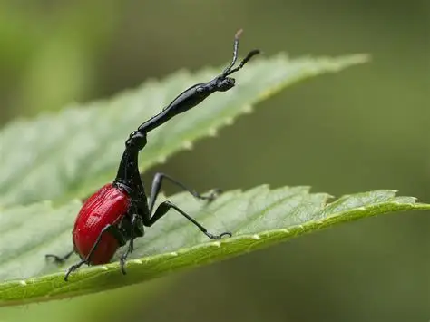

← Voltar para Insetos do Mundo
Besouro-girafa
(Conhecido cientificamente como Trachelophorus giraffa)

🔬 Fatos sobre ele:
- Origem: Ele é uma espécie endêmica da ilha de Madagascar, ou seja, só existe na natureza de lá.
- Alimentação: Ele é um inseto herbívoro e se alimenta das folhas de árvores específicas de Madagascar, principalmente da planta Dichaetanthera cordifolia.
🤯 Curiosidades Bizarras:
- O Pescoço Desproporcional: A característica que dá nome ao inseto é o pescoço incrivelmente longo e articulado dos machos, que chega a ser até três vezes maior do que o das fêmeas. A cabeça articulada na ponta desse "Tubo" faz ele parecer uma girafa em miniatura.
- Duelo de Pescoços: O pescoço gigante dos machos não é para alcançar folhas altas, mas sim uma arma de combate. Quando dois machos disputam o território ou o direito de acasalar com uma fêmea, eles se enfrentam em "lutas de pescoço", batendo e empurrando o rival para fora da folha. Eles raramente se machucam sério, é uma disputa de força pura.
- Origami com Folhas: As fêmeas são verdadeiras engenheiras e usam seus pescoços (que são mais curtos, mas muito fortes) para dobrar e enrolar perfeitamente uma folha verde, criando um rolinho rígido. Ela deposita um único ovo dentro desse tubo de folha, que serve tanto de abrigo seguro quanto de primeira refeição para a larva quando ela nascer.
- Design de Cores Chocante: A armadura dele é uma combinação visual impressionante. Enquanto o corpo e o pescoço longo são completamente pretos e reluzentes, as suas asas externas (os élitros) têm uma coloração vermelho-vivo muito vibrante, servindo para alertar predadores sobre sua presença.
- Ele Sabe Voar: Apesar de toda a anatomia desajeitada com um pescoço gigante projetado para a frente e uma carapaça pesada, ele mantém suas asas funcionais escondidas sob o escudo vermelho e consegue voar perfeitamente para se mover entre as árvores da floresta.